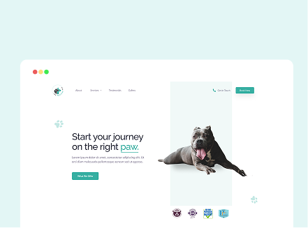

About Me
I'm an enthuastic graduate with a biomedical science and computer science background. I started with a BSc in Biomedical Science at the University of Birmingham, where I achieved a 2:1 and developed a strong foundation in healthcare and research methodology. After completing my biomedical degree, I realized I wanted to strengthen my technical capabilities, so I pursued a conversion MSc in Computer Science. This was quite a transition, I went from having no programming experience to developing a full web-based e-learning platform in just over a year. The project focused on using gamification to teach Python to beginners, and it taught me a lot about research design, user-centered development, and time-management. Since graduating, I’ve been working as a data annotator for AI training projects, but I'm looking to transition into a Junior Developer role. I enjoy the combination of problem-solving and creativity needed to be a developer, and wish to use these skills to help build meaningful software.
Technical Skills
I have a strong foundation in Python and Java, as well as front-end web technologies including HTML, SCSS, and JavaScript. On the back end, I've worked with PostgreSQL for database management and have used both Flask and Spring Boot as my primary web frameworks, utilising Bootstrap for responsive UI design. My development workflow is supported by industry-standard tooling, including Git and Github for version control and collaboration, and IDEs such as VS Code and PyCharm for coding.
Git
HTML5
CSS3
JavaScript
SCSS
BEM
React
Java
Spring Boot
My Projects

Python Learning Platform
I developed a Python Learning Platform to teach Python to beginners. The platform utilised gamification elements and a story-driven narrative to make learning fun and engaging. The user roleplays as a robot, progressing with missions that gradually introduce python concepts, and unlocking new robot avatars as the user progresses. Key features include: story-driven missions, quizzes, progress tracking with XP and level system, points, badges, and a leaderboard system to motivate continued learning.